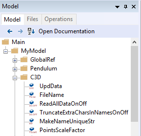

Lesson 5: The Command Line Application¶
The AnyBody Modeling System comes with a command line application named AnyBodyCon.exe; sometimes referred to as the AnyBody Console Application. You will find this .exe file in the AnyBody installation directory.
While lacking a graphical interface, it has the full functionality of the GUI version and is helpful for batch processing of models from Matlab, Python, Java and JavaScript or C++.

It is not possible to build models using the console application but gives faster performance running operations on existing model. The console application can be used manually, or it can take input from a macro file containing commands.
See also
The AnyPyTools Python library developed at Aalborg University. It greatly simplifies working with the console application.
Interactive mode¶
We need a model to work on, so please download and save
Demo.OutputFile.any in a working directory.
Important: To start the console application:
Launch the command prompt and change directory to where you have saved
Demo.outputfile.anyRun
anybodycon.exeusing its full path,C:\path\to\model>"C:\Program Files\AnyBody Technology\AnyBody.7.1\AnyBodyCon.exe" AnyBody Console Application AnyBodyCon.exe version : 7. 1. 1. 6004 (64-bit version) Build : 17585.48300 Copyright (c) 1999 - 2018 AnyBody Technology A/S Current path: C:\path\to\model >
Console commands¶
It only understands eight different commands. You can always get help by using the ‘help’ command or by calling AnyBodyCon with an /? argument. The table below contains a description of the commands accepted by the AnyBody console.
| Command name | Functionality |
|---|---|
| load “<filename>” | Loads an AnyScript model into the system and compiles it. Example: |
| operation <op.name> | This command sets the active operation. This must be the first thing you do after loading.
|
| Run | Runs the active operation. Example: |
| Runmacro | This command loads and executes an anymcr file. Example: |
| Step | Solves a single time step of the active operation. Example: |
| Reset | Resets the active operation. Example: |
| print <object> | Prints the value of a single object. Example: |
| printdown <object> | Recursively prints the values of all elements in an object folder. Example: |
| exit | Exits and returns to the command prompt. Example: |
Using the console application¶
Start AnyBodyCon.exe from the command prompt and issue the command sequence
load "demo.outputfile.any"
operation Main.ArmStudy.InverseDynamics
run
exit
When the operation has finished, we are left with no idea of what the simulation results are! But wait, the model has been programmed to write some output files.
For understanding how open demo.outputfile.any model in the GUI Windows
version of AnyBody Modeling System. You will notice two
AnyOutputFile objects inside the ArmStudy.
// The study: Operations to be performed on the model
AnyBodyStudy ArmStudy = {
AnyFolder &Model = .ArmModel;
InverseDynamics.Criterion.Type = MR_MinMaxStrict;
Gravity = {0.0, -9.81, 0.0};
AnyOutputFile OutFile1 = {
FileName = "out1.csv";
AnyVar MaxAct = .MaxMuscleActivity;
AnyFloat TestTensorConst = {
{1, 2, 3},
{1, 2, 3}
};
AnyFloat TestTensor = {
{
{1, 2, 3},
{1, 2, 3}*2,
{1, 2, 3}*3,
{1, 2, 3}*MaxAct
},
{
{1, 2, 3},
{1, 2, 3}*2,
{1, 2, 3}*3,
{1, 2, 3}*MaxAct
}
};
};
AnyOutputFile OutFile2 = {
FileName = "out2.csv";
Search = {"ArmModel.Muscles.*.Act*", "ArmModel.Muscles.*.Ft"};
SepSign = ";";
};
};
If you open a file manager and look at the directory where you are running the model, you will notice that two new comma-separated value files have been generated: out1.csv and out2.csv. The semicolon separator between numbers was defined in the AnyOutputFile above.
You can open these files in Microsoft Excel, where each column of data corresponds to the variables defined in the AnyOutputFile command.
You can also save the output when using the GUI version by right-clicking on the Output subfolder of the Study folder in the Model Tree and choosing “Save Data”. We can replicate this in the console as follows
load "demo.outputfile.any"
operation Main.ArmStudy.InverseDynamics
run
classoperation Main.ArmStudy.Output "Save data" --file="myoutput.anydata.h5" --type=Deep
exit
The full model output (as opposed to select variables shown in the AnyOutputFile) will be saved in h5 format in the working directory. These results can either be read into MATLAB or Python or be re-loaded into AnyBody GUI (Right click the output sub-folder of the study, and select “Load Data”) for review.
Using define and path statements for loading a model¶
If you are firstly unfamiliar with these statements, you can find an introduction in the tutorial Getting started: AnyScript Programming. They give us some limited control over modifying the model from the command line application. As a simple example, let us use a #define to change the number of time steps in our operation.
#ifndef NOSTEPS
#define NOSTEPS 100
#endif
// The study: Operations to be performed on the model
AnyBodyStudy ArmModelStudy = {
AnyFolder &Model = .ArmModel;
InverseDynamics.Criterion.Type = MR_MinMaxStrict;
Gravity = {0.0, -9.81, 0.0};
nStep = NOSTEPS;
};
If we now exchange
load "demo.outputfile.any"
from our operation sequence with
load "demo.outputfile.any" –def NOSTEPS=50
we will see that our model will only to 50 timesteps now.
Non-interactive Mode¶
One of the main strengths of the console application is that it can be executed by other software such as Matlab, Visual Basic or Python. You can store the commands for such executions of the console in a macro file having the extension “.anymcr”.
As with the interactive mode, we can use #define- and #path statements for purposes like changing the output file name, which may need to be different each time the console application is called. For this, we first need to modify the AnyScript file with an OUTPUTFILE argument:
#ifndef NOSTEPS
#define NOSTEPS 100
#endif
#ifndef OUTPUTFILE
#define OUTPUTFILE "armoutput.anydata.h5"
#endif
AnyOperationSequence RunApplication = {
// This operation is the inverse dynamic analysis
AnyOperation &InvAnal=Main.ArmModelStudy.InverseDynamics;
// This operation saves the output of the study to an h5 file in the
Output folder
AnyOperationMacro save = {
MacroStr={ "classoperation Main.ArmModelStudy.Output " + strquote("Save data") + " --file=" + strquote(OUTPUTFILE) + " --type=Deep"};
};
};
// The study: Operations to be performed on the model
AnyBodyStudy ArmModelStudy = {
AnyFolder &Model = .ArmModel;
InverseDynamics.Criterion.Type = MR_MinMaxStrict;
Gravity = {0.0, -9.81, 0.0};
nStep = NOSTEPS;
};
Further we create an .anymcr file which we can call ‘runarm.anymcr’. It contains the following operations
load "demo.outputfile.any"
operation RunApplication
run
exit
We can now execute the macro file by calling
C:\Program Files\AnyBody Technology\AnyBody.7.1\AnyBodyCon.exe" /m “runarm.anymcr”
from the folder where we saved our model and the macro file. It will create an output file called ‘armoutput.anydata.h5’ which we specified in the .any file.
To change the name of the output file, we can call the macro again with a #define statement for the file name
C:\Program Files\AnyBody Technology\AnyBody.7.1\AnyBodyCon.exe" /m runarm.anymcr /def OUTPUTFILE=---"\"myoutput.anydata.h5\""
What the construction —“” … ”” is doing, in this case,
is that it will define a quoted string for the #define statement similar
to the definition in the .any file. As a result we see that the output
is written to the file ‘myoutput.anydata.h5’.
You are now ready to let the command line application be part of a system for biomechanical data processing of your own design.
Path specification¶
As mentioned earlier, you can add the path of AnyBodyCon.exe to the PATH environmental variable for your command prompt to ease the call to AnyBodyCon.exe from anywhere. This you can do from the command prompt with a statement such as:
path %path%;C:\Program Files\AnyBody Technology\AnyBody.7.1;
It will add AnyBodyCon.exe’s path to the existing path
definition. Notice that there cannot be any space between ; and the
following path c:... and that you can see the resulting path by
simply calling the internal path command again without arguments.
These statements will only take effect until the current command prompt
is closed, but you can also add the path of AnyBodyCon.exe permanently
to the path for all command prompts. In Windows XP for instance, you do
this from Control Panel -> System under the Advanced tab. You should,
however, be aware that multiple versions of AnyBody may be installed on
the computer at the same time, and therefore, multiple versions of
AnyBodyCon.exe may exist in different locations. Thus, your path
specification not only makes it easy to call AnyBodyCon.exe; it will
also specify which version that will be used. This can make it unclear
which version you are actually using if you need several of them.
To be in full control of multiple AnyBody installations, you can define aliases by the following procedure:
- Make a directory with .bat files or shortcuts to the AnyBodyCon.exe version you will need. Name the bat-files so you can recognize the different versions, e.g. AnyBodyCon61.bat and AnyBodyCon70.bat. The bat files contain a single statement, the call of AnyBodyCon.exe with its full path.
- Add this directory to the permanent path of the command prompt.
- You can now call the different versions of AnyBodyCon via the bat files, so the bat file names are working as aliases for the real .exe files.
See also
Next lesson: Lesson 6: Modifying the Loaded Model.